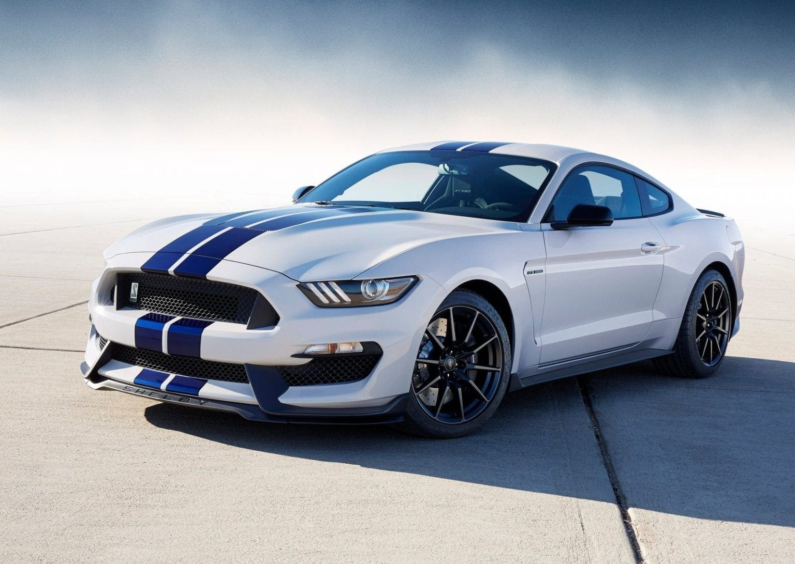

This is Ford mustang Shelby GT500

The standard 2025–2026 Shelby GT500 is equipped with a supercharged 5.2-liter V8 engine, delivering over 700 horsepower and 700 lb-ft of torque. It features a dual-clutch transmission for rapid gear shifts, enabling a 0-60 mph time under 3 seconds and a top speed exceeding 200 mph. The car uses MagneRide suspension and Brembo brakes for precise handling and stopping power, while 305/30ZR20 front and 315/30ZR20 rear Pirelli P Zero R-compound tires maximize traction.
The GT500 has a broader stance with flared fenders, a vented hood, larger front grille, chin spoiler, rear diffuser, and a functioning rear spoiler to enhance aerodynamics and stability at high speeds. Optional carbon-fiber panels and racing stripes are available for customization. The interior features a 12.4-inch digital gauge cluster, 13.2-inch infotainment screen, Recaro seats, and Alcantara trim, emphasizing both performance and luxury.
Fuel efficiency ranges from 12 to 15 mpg combined, reflecting its high-performance V8 engine. The GT500 can run on standard 93-octane pump gas, while some special editions like the Code Red can utilize E85 ethanol for maximum output.
The Shelby GT500 Code Red is a limited edition with a hand-built twin-turbocharged V8, producing 1,000 horsepower and 780 lb-ft of torque on 93 octane, and up to 1,300 horsepower and 1,000 lb-ft on E85. It features carbon-fiber body components, widebody side rocker wings, rear wing spoiler, and upgraded suspension and cooling systems. Only 30 units are produced from 2020–2022 model years, making it extremely exclusive.
The GT500’s MagneRide suspension adapts to driving conditions, while Brembo brakes provide high-performance stopping power. The car includes BlueCruise hands-free driving for highway use, and the cockpit integrates Apple CarPlay and Android Auto wirelessly. Optional carbon-fiber wheels reduce unsprung weight for improved handling.
The Shelby GT500 combines raw power, advanced aerodynamics, and modern technology to deliver a true American muscle car experience. From the standard 700+ horsepower V8 to the extreme Code Red edition, it offers track-capable performance, aggressive styling, and exclusivity for enthusiasts and collectors alike.